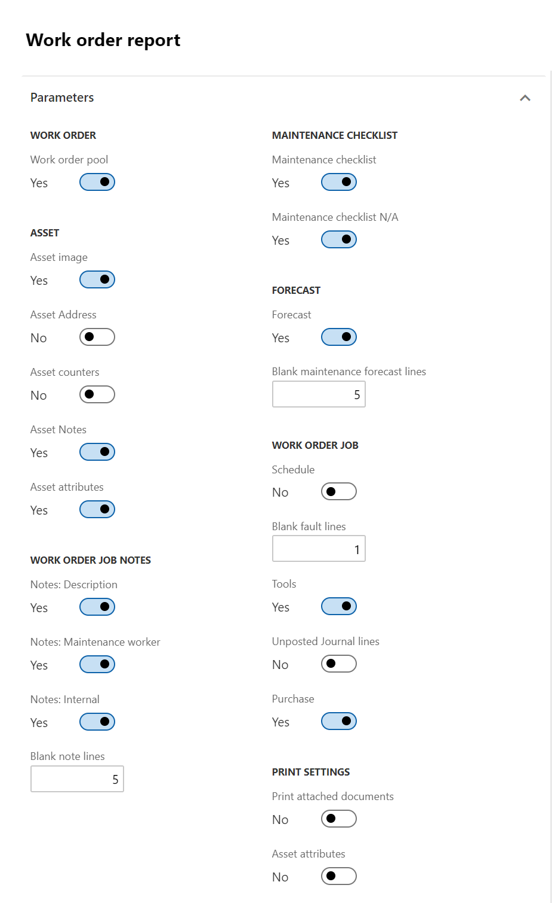
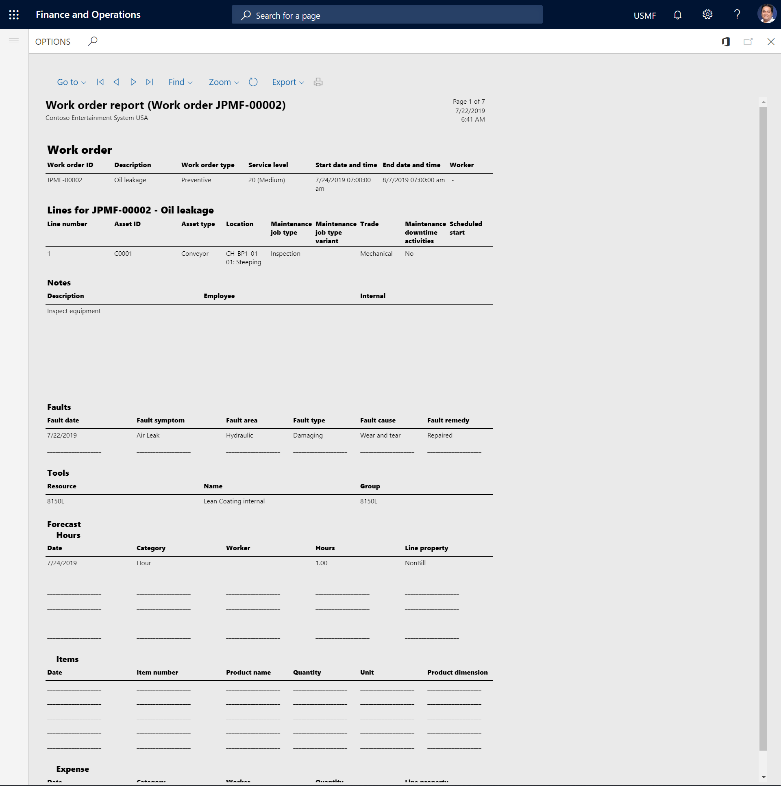

Work order report
You can generate a work order report that shows detailed information about one or more work orders that you select.
Select Asset management > Reports > Work orders > Work order report.
Select "Yes"/"No" on the toggle buttons as you require, to determine the details to be included in the report.
- In the Print settings section, you can select whether to include attachments from the setup of the related maintenance job type.
On the Records to include FastTab, you can filter the contents of the report by Work order.
On the Run in the background FastTab, you can set up generation of the work order report as a batch job, as you require.
Select OK to generate the report.
The following illustration shows an example of how the report parameters can be set up.

The following illustration shows an example of a work order report that is generated based on that setup.
